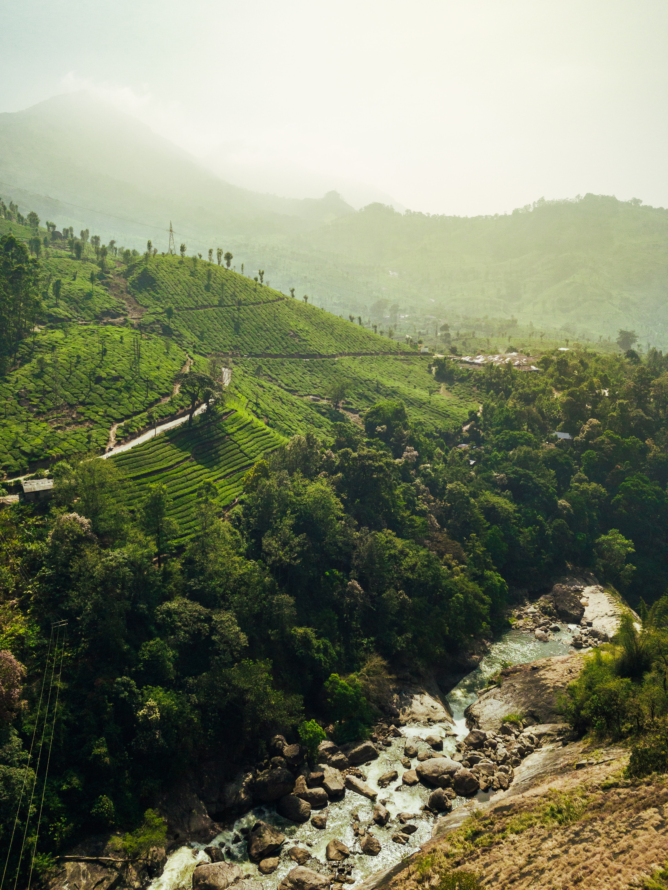

MUNNAR
Munnar is a breathtaking hill station nestled in the Western Ghats of the Indian state of Kerala. Known for its lush greenery, mist-covered hills, and expansive tea plantations, Munnar is a popular destination for nature lovers and those seeking a tranquil retreat. The region's cool climate is a refreshing escape from the heat of the plains, making it a year-round destination.
One of the key attractions in Munnar is its vast tea estates that blanket the hillsides, creating a picturesque landscape. Visitors can explore these plantations to witness the tea-making process, from plucking the leaves to processing them in the factories. The scenic beauty of Munnar is further enhanced by its numerous waterfalls, such as Attukal and Lakkam, which add to the charm of the region. The Eravikulam National Park, home to the endangered Nilgiri Tahr, is another highlight, offering opportunities for wildlife enthusiasts and trekking enthusiasts alike.
Apart from its natural beauty, Munnar also boasts colonial-era structures and landmarks, reflecting its history. The Mattupetty Dam and Kundala Lake are popular spots for boating and picnics, while the Anamudi Peak, the highest point in South India, offers trekking challenges and panoramic views of the surrounding landscapes. Munnar's unique blend of natural wonders and cultural heritage makes it a captivating destination for a memorable getaway.


The history of Munnar is closely tied to its emergence as a significant center for tea cultivation during the colonial era. The region was initially inhabited by the Muthuvan tribal community. In the 19th century, the British recognized the potential of the Western Ghats for tea cultivation and other plantations. In 1877, James Finlay & Company, a British tea planter, leased land in the hills of Munnar from the Poonjar Raja, marking the beginning of large-scale tea cultivation in the area.
During this time, A.H. Sharp, a European, played a crucial role in the development of Munnar. He planted the first tea sapling in the region and also established the Sevenmallay Estate. The success of these early endeavors paved the way for more British companies and individuals to venture into Munnar for tea cultivation. As tea estates expanded, the region transformed into a thriving hub for the tea industry.
In the subsequent years, the Tata Group took a significant interest in Munnar. In 1895, A.H. Sharp sold his property to Tata, and under their management, Munnar further flourished as a tea-producing region. The Tata Tea Company played a pivotal role in shaping the landscape and economy of Munnar.
The colonial legacy is still visible in Munnar through some of the old buildings and estates that have been preserved. Today, Munnar stands as a testament to the successful integration of tea cultivation with the natural beauty of the Western Ghats, attracting tourists from around the world.